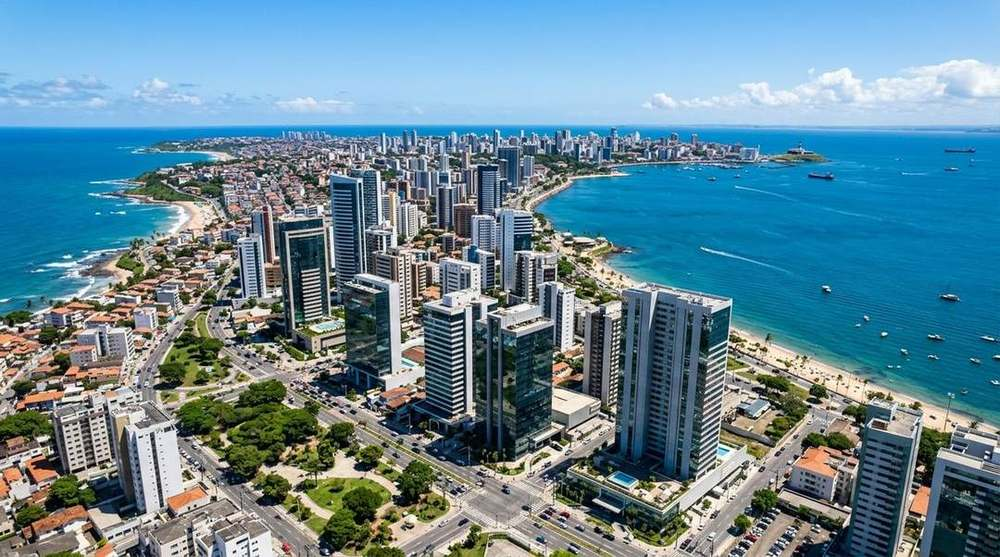

Fórum de Inovação & Negócios Bahia 2026
Horário: 09h00 às 17h00 | Local: Centro de Convenções de Salvador
Painéis estratégicos com líderes industriais e startups debatendo a transformação digital no comércio e serviços baianos.

Conecte sua empresa à maior comunidade comercial e de inovação do estado. Junte-se a líderes e impulsione parcerias sustentáveis e lucrativas.
Horário: 09h00 às 17h00 | Local: Centro de Convenções de Salvador
Painéis estratégicos com líderes industriais e startups debatendo a transformação digital no comércio e serviços baianos.
Horário: 08h30 às 11h30 | Local: Salão Nobre - Associação Comercial
Encontro exclusivo para apresentação de soluções B2B, geração de novos negócios e parcerias entre associados da câmara.
Horário: 14h00 às 18h00 | Local: Auditório Bahia Tech (Híbrido)
Capacitação prática sobre linhas de crédito verdes, sustentabilidade corporativa e redução de pegada de carbono.
Salvador, BA
Tempo em Tempo Real
Carregando...
Apoiadores estratégicos de nível Ouro e Prata que impulsionam o comércio, serviços e a inovação em nossa capital.